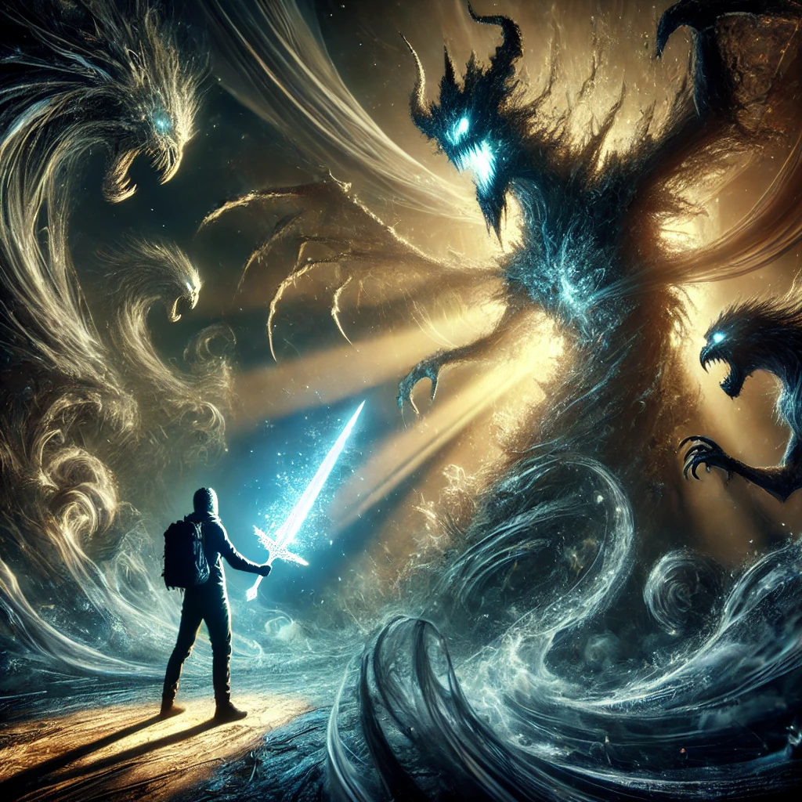

You grip the crystalline dagger tightly, its surface glowing with an otherworldly energy. As you hold it, you feel a surge of courage mixed with fear. The blade seems to vibrate in your hand, resonating with the unspoken truths buried deep within your soul.
“This dagger is not a weapon,” the ethereal being says, its voice echoing in your mind. “It is a tool for transformation. To wield it is to confront the shadows, to cut through illusion, and to integrate the parts of yourself you fear most.”
A vision surrounds you—a swirling, shifting darkness filled with forms both monstrous and familiar. The dagger pulses, inviting you to take action. The shadows draw closer, their whispers growing louder, urging you to choose how to face this moment.

What will you do?